|
View my profiles on: |
My favorite Nickelodeon shows1/17/26 If you have heard any of my songs, or follow me on Instagram, or know me in real life, then you probably know that I like Nickelodeon. Like, A LOT, it's like my strange addiction or whatever. Anyways, I will dedicate this blog post to some of my favorite Nickelodeon shows. By that I mean just anything they've ever aired on any of their channels. This is so that I don't have to make separate posts listing shows I like that were only on Nicktoons or TeenNick. Special thanks to Nickandmore! for their list of every show that aired on Nick ever. 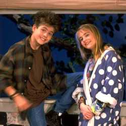 Clarissa Explains It All (1991) Up until about 2 years ago, I had only seen a handful of episodes of this show that were included on this VHS tape. ignore this lol 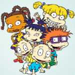 Rugrats (1991) Who doesn't like Rugrats? ignore this lol 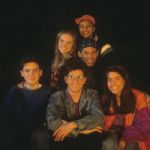 Are You Afraid of the Dark? (1992?) There are only a handful of episodes of this show that I like, but I like them a lot. My favorite is the one where some girl dies in her chemistry class. ignore this lol 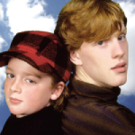 The Adventures of Pete & Pete (1993?) I've never seen a boring episode of this show. ignore this lol 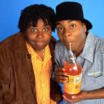 Kenan & Kel (1996) This is like the funniest show ever. The very first time I watched this show, I actually hated it at first because my sister was basically bragging to me that she saw it on The '90s Are All That, and I didn't (for those who don't know, The '90s Are All That was a programming block on TeenNick that aired a bunch of old Nick shows from the '90s and stuff). Anyways, she pulled up an episode on nick.com (it was the episode "Who Loves Orange Soda?") and I thought it was like the funniest thing I had ever seen. If you couldn't tell already, Kenan & Kel is like my favorite TV show ever. ignore this lol 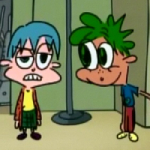 KaBlam! (1996) I found out about this show because of its "lost" episode. At the same time, I also found out about the Wayback Machine on the Internet Archive which is like one of the coolest things on the internet ever. I really like the Action League Now! segments. ignore this lol 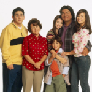 George Lopez (2002) Nick @ Nite, originally on ABC I always hear from people online and in-person that they would get woken up late at night from the George Lopez theme song because they accidentally slept with the TV on. I had the complete opposite experience basically. I would usually stay up at some arbitrary hour, just channel surfing and I would see George Lopez airing on Nick. At the time, I didn't know who George Lopez was, to be completely honest I thought George Lopez was the name of some local lawyer or whatever, and he just paid Nick to air his advertisements at like 2 AM. I would go to the channel expecting to see some car insurance ad, but instead I would see a commercial break. This wasn't a one time thing, this happened many times over the course of a few years. I actually thought the George Lopez show wasn't even real until I decided to watch it a few years ago. It is a real show, and I think it's very funny. ignore this lol 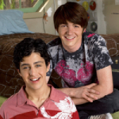 Drake & Josh (2004) Who doesn't like Drake & Josh? ignore this lol 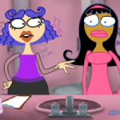 O'Grady (2004) TeenNick, originally on The N I really like how all of the conversations the characters have in this show sound real. Also, the theme song is sung by Kelly Osbourne. ignore this lol 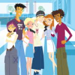 6teen (2004) originally on Teletoon I literally did not know this show was on Nick until I saw it on the list that I'm looking at right now. I used to watch 6teen on Cartoon Network so it really shouldn't even be on this list lol. ignore this lol 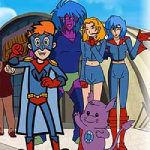 Kappa Mikey (2006) Nicktoons, aired on Nick for a few months I became obsessed with this show the moment I found out about it because the concept is so cool, especially to a DBZ obsessed 8 year old. ignore this lol 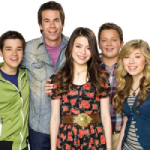 iCarly (2007) Up until 2020, I never watched iCarly because I thought it was a stupid show for girls. I was wrong. ignore this lol 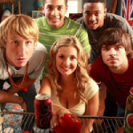 About A Girl (2007) TeenNick, originally on The N I wish this show had more than 1 season. I watched About A Girl a few weeks before I started college, and it made me think that I was gonna hangout with my roommates all of the time. I only hangout with one of my roommates, and that's because I've known him for almost my whole life. ignore this lol 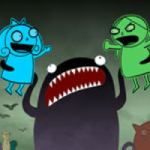 Making Fiends (2008) Nicktoons I'm just now finding out that this show only aired on Nicktoons even though I'm pretty sure I used to see images of it on nick.com???? I just checked the Wayback Machine, I was very wrong. Anyways, I'm pretty sure I've seen every episode of this show, considering there are only 6. This show is pretty good, I have no idea why it got cancelled so quickly. ignore this lol Big Time Rush (2009) I used to be scared to even acknowledge BTR's existence because my sister hated this show so much. I watched it for the first time about 2 years ago, and I have no idea why my sister hates BTR as much as she does. I think it's a good show, and they have good music. ignore this lol 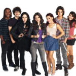 Victorious (2010) Up until 2022, I never watched Victorious because I thought it was a stupid show for teenage girls. I was wrong. ignore this lol 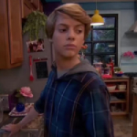 Henry Danger (2014) I remember watching Henry Danger everyday after school; those were the days. I still watch Henry Danger every now and then, it's really funny. ignore this lol 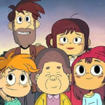 Wylde Pak (2025) This is a very new show, I've seen it a few times and I think it's really good. I hope it doesn't get cancelled anytime soon. Nickelodeon, please don't cancel this show anytime soon. This is the end of this list. |
|
View my profiles on: |
 Soundcloud
Soundcloud iTunes
iTunes YouTube
YouTube Instagram
Instagram